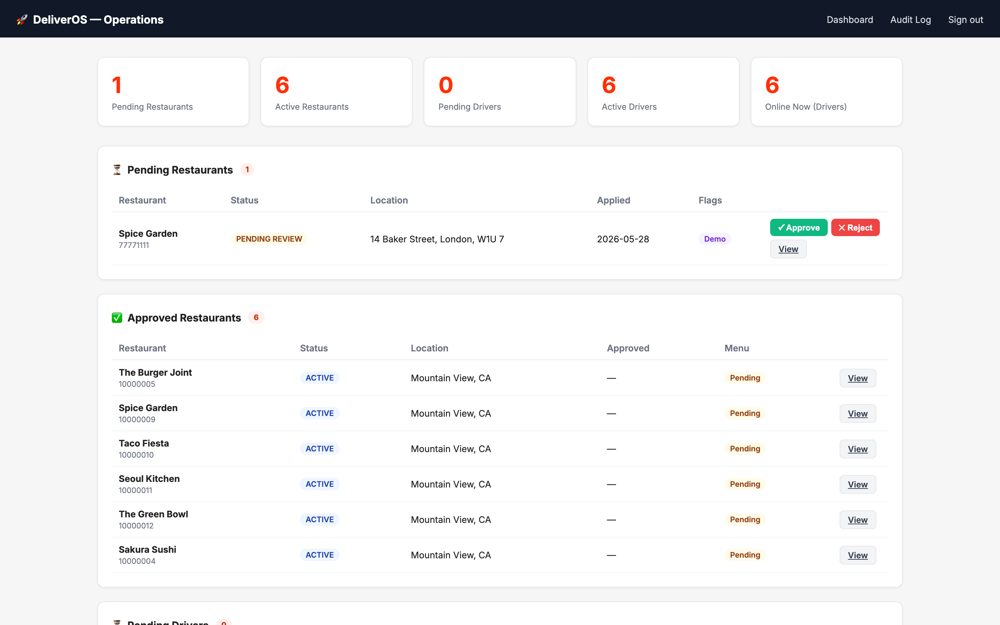
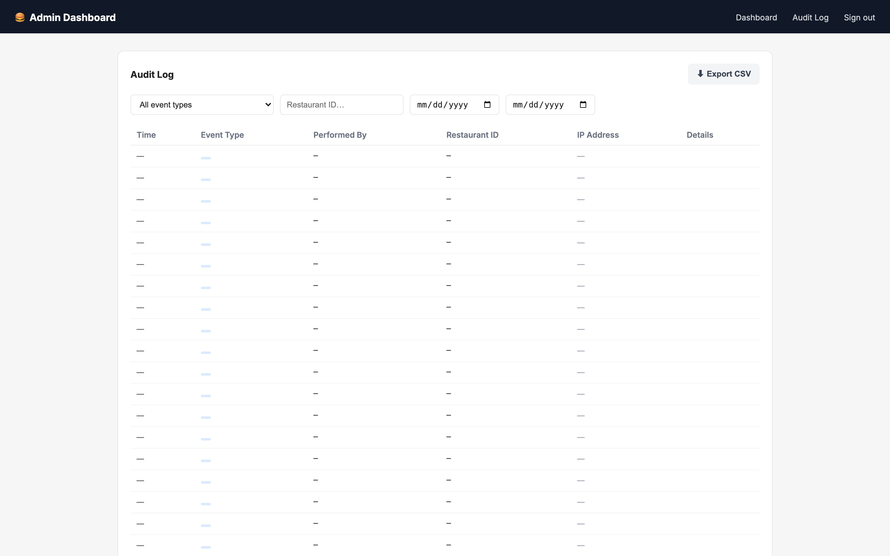

| The Problem | What Was Built | The Outcome |
|---|---|---|
| Food apps force customers through rigid category filters — useless when you just know what you feel like eating. | AI that converts natural-language queries into meaning-based searches across live restaurant menus. | Customers can order by craving, not by knowing the right category to tap. |
| AI assistants can confidently make up details — wrong restaurant names, prices that don't exist. | Every AI response is automatically checked by a second AI before reaching the user, blocking any invented content. | Users can trust every restaurant, price, and time shown — it was verified before they saw it. |
| Restaurant and driver coordination is usually handled through phone calls, WhatsApp, or manual dispatch. | Three AI assistants share order state. When a customer orders, the restaurant AI is notified. When food is ready, the driver AI is notified — no human in the loop. | End-to-end coordination runs automatically, from order placement to delivery confirmation. |
| Edge cases in food delivery — cancellations, driver no-shows, disputes — are typically handled reactively. | Every failure scenario is a defined state with automatic recovery: timeout triggers re-assignment, cancellation triggers refund, dispute triggers support ticket. | No order goes silent. Every customer gets a response. Every penny is accounted for. |
| Getting a restaurant live on a new platform requires hours of manual data entry — re-typing every item, price, and category. | Three menu import methods: paste a website URL (AI scrapes and parses the page), photograph a physical menu (AI reads the image), or upload an Excel template. All stored with Cloudflare R2 for photos. | A restaurant with a 100-item menu can go live in under five minutes — with zero manual data entry. |
| Platform operators have no visibility into what's happening across restaurants, drivers, and orders without building admin tooling. | Fully-featured admin portal with restaurant and driver approval queues, order state overrides, refund initiation, and a filterable audit log with CSV export — shipped alongside the platform. | Operators have full visibility and control from day one. No custom admin tooling needed. Every action is logged and attributable. |
| Payments for restaurants and drivers involve multiple Stripe products (Payments, Identity, Connect) that are painful to wire together correctly. | Stripe Payment Intents for customer auth/capture, Stripe Identity for driver and restaurant KYC, Stripe Connect for automatic restaurant and driver payouts — all triggered by order state changes, not manual processes. | Customers get automatic refunds on cancellation. Restaurants and drivers get paid without chasing. The full payment loop is closed without human intervention. |
| Third-party AI agents — voice assistants, concierge bots — can't access food ordering without a platform-specific custom integration. | The platform exposes an MCP (Model Context Protocol) server. Any AI agent can browse menus, place orders, and track delivery through a single standard interface. | DeliverOS becomes a composable capability — plug any AI assistant into the platform without writing custom code for each one. |
- Order in any words, any phrasing
- Results matched by meaning
- Track every stage in real time
- AI help available mid-delivery
- Automatic refunds on issues
- App, web, or Telegram — same AI
- Orders via Telegram or app instantly
- One-tap confirm or reject
- Menu from URL, photo, or spreadsheet
- Stripe Connect payout on delivery
- Web portal: order history & metrics
- Pause / resume in one message
- Jobs via Telegram or mobile app
- Decline → automatic reassignment
- Handover code confirms delivery
- Stripe Identity KYC in-app
- Web portal: earnings & balance
- Instant payout on request
- Admin web portal — full visibility
- Approve restaurants & drivers
- Override any order state manually
- Initiate refunds & resolve disputes
- Audit log: every action, every actor
- 10 automated background jobs




Every AI decision in DeliverOS was made to solve a user problem, not to showcase technology. Semantic search exists because customers don't browse like a database. The second AI safety check exists because users can't tell when an AI is making something up — the platform has to catch it for them. Three separate AI assistants exist because a single generic AI gives worse answers to everyone.
The hardest product work was designing the failure paths. What happens when a restaurant doesn't respond? When a driver goes offline mid-delivery? When a customer disputes a completed order? Every one of these is a defined, tested state with a documented resolution — not a gap to discover in production. That's the difference between a demo and a platform.
Defined the product, designed user flows, made architecture decisions, and shipped all user experiences — customer, restaurant, driver, and operator admin — from zero.
Decided where AI adds real value vs. where it introduces risk. Built safety mechanisms (fact-checking, grounding, JSON validation) as first-class product requirements, not afterthoughts.
Designed the full payment loop: Stripe Payments for customer auth/capture, Connect for restaurant & driver payouts, Identity for KYC. Every financial edge case — refund, dispute, failed payout — is handled and logged.